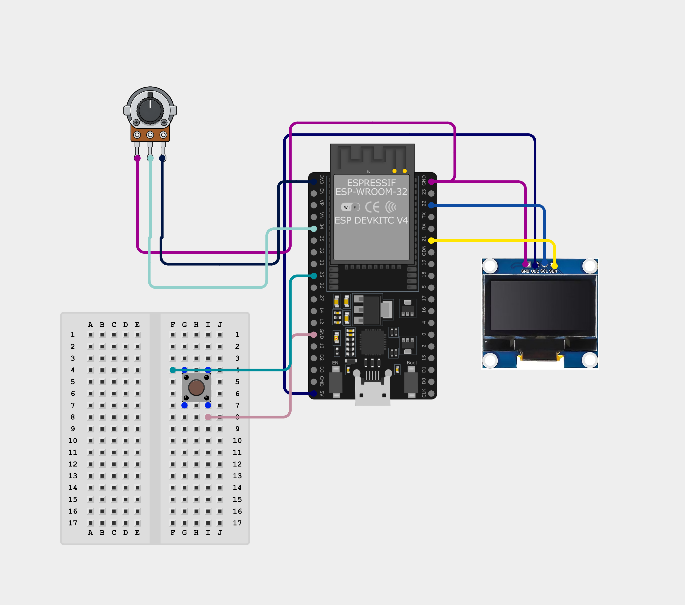

03 / Embedded Systems & Tooling
LumiDesk
Physical ESP32 + OLED desktop media display reading Windows' system-wide media sessions without cloud API dependencies.

What It Is
LumiDesk turns an ESP32 and a 1.3″ SH1106 OLED display into a standalone physical hardware display for whatever audio is playing on your Windows workstation. It displays track titles, artist info, synced lyrics via LRCLIB, live playback progress bars, weather forecasts, time, and system notifications.
It includes a lightweight desktop companion launcher running in the Windows system tray with a local FastAPI backend that interfaces directly with Windows' Global System Media Transport Controls (GSMTC).
Why It Was Built
Almost all existing "now playing" displays rely on Spotify's Web API, which requires constant OAuth authentication, rate limit headaches, and completely breaks when listening to YouTube, local files, Podcasts, or browser media.
LumiDesk circumvents cloud APIs entirely by tapping directly into Windows' native OS-level media session. If Windows hears it, LumiDesk displays it — with zero logins, zero tracking, and zero API quotas.
System Architecture
Key Contributions & Firmware Design
- Zero-API OS Hooking: Connected directly to Windows RT WinRT APIs to hook OS-wide media events across browsers and desktop apps.
- Modular C++ Firmware: Structured the ESP32 codebase using clean object-oriented managers:
ScreenManager,AnimationManager,MarqueeManager,NotificationManager, andClockManager. - Synced Lyrics Engine: Implemented real-time timestamp parsing and smooth marquee text scrolling for active lyrics.
- Desktop Companion Launcher: Built a complete system tray application handling automatic daemon boot, local Wi-Fi pairing, and volume control.
Results & Takeaways
Achieved a near-zero latency physical media monitor with fluid text marquee animations and zero reliance on third-party cloud services. Proven in daily desktop usage across Spotify, YouTube Music, VLC, and browser tabs.